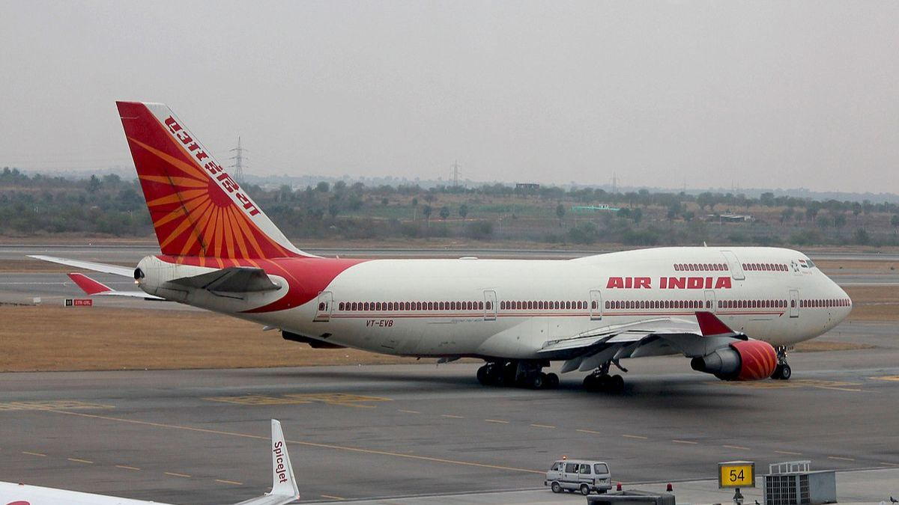

High Cloud Airlines P1056 In Excel
The objective of this project is to evaluate airline operational performance by analyzing passenger transportation trends, flight volume distribution, and load factor efficiency. Through this analysis, the dashboard identifies high-performing carriers, top-demand routes, and seasonal travel patterns. These insights enable decision-makers to optimize route planning, improve fleet utilization, and design strategic initiatives that enhance profitability and overall operational efficiency.
High Cloud Airlines P1056 In Power BI
Based on the "HIGH CLOUD AIRLINES DASHBOARD ANALYTICS" image, the objective focuses on using data analysis, visualization, and business intelligence (BI) tools to derive actionable insights from complex aviation data. Project Objective: To design and implement a comprehensive Airlines Dashboard Analytics system, transforming raw flight data—including Total Flights (110,851), Total Passengers (1.87B), and Load Factor (0.767)—into actionable business intelligence. This project specifically aims to visualize temporal trends in passenger volume, analyze route profitability (e.g., Washington, DC - Atlanta, GA), and compare carrier performance to identify opportunities for maximizing available seat capacity and optimizing flight scheduling for better operational efficiency and revenue growth.
High Cloud Airlines P1056 In Tableau
The objective of this project is to evaluate airline operational efficiency by analyzing passenger transport volumes, flight distribution patterns, and load factor performance. This study aims to identify high-performing carriers, profitable routes, and optimal time periods that drive business growth. The insights derived help in determining areas that require strategic optimization to enhance revenue generation, improve flight utilization, and support data-driven decision-making in airline route and resource planning.
Social
- © Untitled
- Design: HTML5 UP